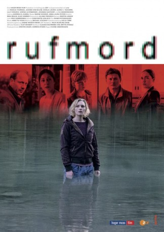

#9930 Rufmord
 
 IMDB-Wertung: 6.8 / 10
IMDB-Wertung: 6.8 / 10  Metascore: 0
Metascore: 0 
Luisa liebt ihren Lehrerberuf und ist bei ihren Schülern beliebt. Doch kurz nachdem sie sich geweigert hat, einem Schüler eine Gymnasialempfehlung zu geben, taucht auf der Webseite ihrer Schule ein Nacktfoto von ihr auf. Ihr Leben wird zum Spießrutenlauf.
Jahr: 2018
Dauer: 87 Minuten
FSK:
Land: Deutschland Studio: ArteTonspuren:
Untertitel:
Auflösung: 720p (1280x720) Größe: 1525 MB
Genre: Drama, Krimi
Regisseur: Viviane Andereggen
Drehbuch: Claudia Kaufmann, Britta Stöckle
Soundtrack: Annette Focks
Darsteller:
 Rosalie Thomass als Luisa Jobst
Rosalie Thomass als Luisa Jobst Johann von Bülow als Georg Bär
Johann von Bülow als Georg Bär- Ulrike C. Tscharre als Marianne Bär
- Verena Altenberger als Kommissarin Baumann
 Johanna Gastdorf als Direktorin
Johanna Gastdorf als Direktorin- David Altman als Friend
 David Baalcke als alter Wagner
David Baalcke als alter Wagner- Shenja Lacher als Finn
 Lilly Forgach als Polizistin Martina Lechner
Lilly Forgach als Polizistin Martina Lechner- Elisabeth Wasserscheid als Kiki
- Natalia Rudziewicz als Melly
- Nico Marischka als Paul Bär
- Leo Bilicky als Louis
- Bernd Dechamps als Anwalt
- Angelika Fink als Susanne
- Thomas Gräßle als Moritz
- Katja Lechthaler als Brigitte
- Gottfried Michl als Postbote
- Franz Pätzold als Polizist
- Kathrin Anna Stahl als Mutter Franziska
Datei: X:\2018(N-Z)\Rufmord (2018, FSK, 1280x720).mp4 seit 14.11.2018
Festplatte: HD 2018(G-Z)-2019(A-Z)
 Es gibt insgesamt 172 Filme in der Gruppe '2018(N-Z)'
Es gibt insgesamt 172 Filme in der Gruppe '2018(N-Z)'